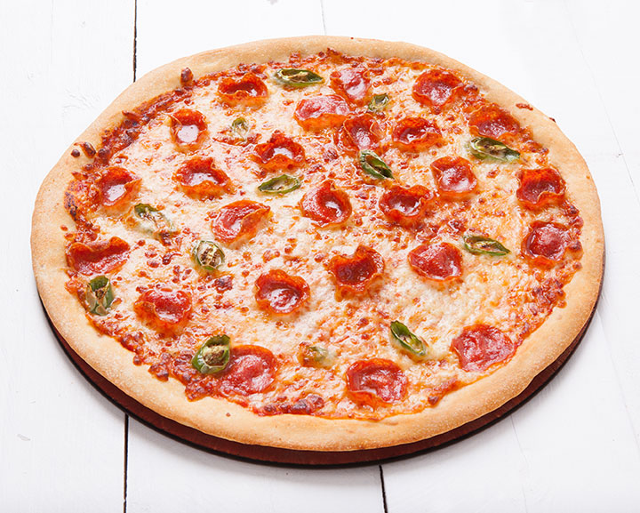

Pizza

Pizza
There is not a single soul on Earth that does not enjoy a slice of pizza.
Originating in Italy, this circular dish topped with cheese, cheese and more cheese, oh and some other stuff like pepperoni, cheese, basil, olives, tomatoes, ricotta and cheese, can be found on any restaurant's menu around the world.
Ingredients
For Dough
- 1 and a Half CupsWarm Water
- 1 TablespoonWhite Sugar
- 10g / 1 SachetActive Dry Yeast
- 1.5 TeaspoonsSalt
- Quarter CupOil
- 3.5 CupsWhite Bread Flour
Toppings
Steps
- In a large bowl, dissolve the sugar in warm water, and then stir in yeast. Allow to proof until yeast
resembles a creamy foam.
- Mix salt and oil into the yeast. Mix in flour one cup at a time. Knead dough on a lightly floured surface
until smooth. Place in a well oiled bowl, and turn dough to coat. Cover with a damp cloth. Allow to rise
until doubled in bulk, about 1 hour.
- Punch dough down. Knead for a few minutes, and divide in half. Shape into loaves, and place into two well
oiled 9x5 inch loaf pans. Allow to rise for 30 minutes, or until dough has risen 1 inch above pans.
- Bake at 350 degrees F (175 degrees C) for 30 minutes.